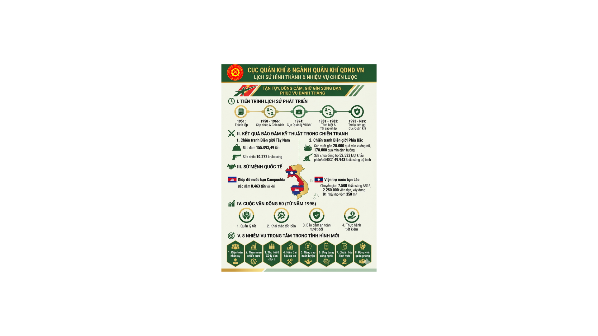

Thực hiện chủ trương của Trung ương Đảng và Tổng Quân ủy về chấn chỉnh tổ chức, biên chế trang bị trong phạm vi toàn quân, nhằm đưa lực lượng vũ trang của ta phát triển một cách hợp lý, vững chắc trong giai đoạn mới, ngày 01/9/1951, Đại tướng Võ Nguyên Giáp, Bộ trưởng Bộ Quốc phòng - Tổng Tư lệnh Quân đội Quốc gia Việt Nam ký Nghị định số 277/NĐ về việc thành lập Cục Quân khí trực thuộc Tổng cục Cung cấp. Đồng chí Trần Thuỳ, Trưởng ty Quân Giới Khu 3 giữ chức Cục phó, Quyền Cục trưởng Cục Quân khí (ngày 12/01/1947 thành lập các ty quân giới từ Khu 5 trở ra).
Tổ chức biên chế ban đầu của Cục Quân khí gồm: 01 Cục trưởng, 01 Cục phó; 08 phòng, ban cơ quan, với quân số toàn cơ quan là 273 người; 14 đơn vị cơ sở, gồm: 05 trạm quân khí, 04 kho lẻ, 01 xưởng sửa chữa, 01 Ban Quân khí chiến dịch (tiền phương), 01 kho trung tuyến, Phòng Quân khí liên khu 3-4 (có các trạm, xưởng trực thuộc) và 01 Công trường mộc.
Được sự đồng ý của Tổng cục Cung cấp, cơ quan Cục Quân khí chọn ngày chủ nhật 16/9/1951 là ngày chính thức đi vào hoạt động. Từ đó, ngày 16 tháng 9 hằng năm được lấy làm Ngày truyền thống Cục Quân khí.
Trong dịp kỷ niệm 50 năm Ngày truyền thống, theo nguyện vọng của các thế hệ cán bộ, chiến sỹ Ngành Quân khí, Đảng ủy, chỉ huy Cục Quân khí và Tổng cục Kỹ thuật đã đề nghị và được Bộ trưởng Bộ Quốc phòng ký Quyết định số 1781/QĐ-BQP ngày 08/9/2001 công nhận ngày 16 tháng 9 năm 1951 là Ngày truyền thống Ngành Quân khí Quân đội.
Được sự đồng ý của Thủ trưởng Tổng cục Cung cấp, đầu tháng 11 năm 1951, Cục Quân khí đã di chuyển toàn bộ cơ quan về Bản Tò, xã Phượng Tú (nay là xóm Làng Quyền, xã Lam Vĩ), huyện Định Hóa, tỉnh Thái Nguyên.
Trong giai đoạn này, Cục Quân khí đã tập trung củng cố xây dựng cơ quan, tổ chức cơ sở Ngành Quân khí: Điều chỉnh tổ chức biên chế các phòng, ban cơ quan Cục; đổi tên ban quân khí ở các liên khu thành phòng quân khí; đổi tên các trạm thành các tổng kho, sau đó lại đổi tên các tổng kho thành kho và phân kho; thành lập Đội Huấn luyện thuộc Cục Quân khí; thành lập các ban quân khí ở các đại đoàn bộ binh, đoàn công pháo; các tiểu ban quân khí ở các tỉnh và các trung đoàn; ở cấp tiểu đoàn có 01 cán bộ quân khí, cấp đại đội có 01 quân khí viên, thành hệ thống theo ngành dọc trong toàn quân, đáp ứng yêu cầu nhiệm vụ mới.
Cuối năm 1952, Cục Quân khí đã quy hoạch 05 tổng kho với 17 kho; thu dồn 26 kho ở Việt Bắc thành 15 kho lớn; triển khai xây dựng 10 kho, xưởng quân khí cấp bộ ở khu căn cứ cách mạng và khu đồng bằng Bắc Bộ; thay thế các lán tạm và tiếp tục cải tạo các hang hầm để cất chứa vũ khí, đạn; xây dựng phòng, ban quân khí ở các cấp; huấn luyện, đào tạo được 1.195 cán bộ, nhân viên quân khí biên chế cho các đơn vị.
Ngày 13/01/1955, Tổng cục Cung cấp đổi tên thành Tổng cục Hậu cần; các liên khu đổi tên gọi là quân khu (theo sắc lệnh số 17/SL ngày 03/6/1957 của Chủ tịch Hồ Chí Minh). Miền Bắc có 06 quân khu, gồm: Tây Bắc, Việt Bắc, Đông Bắc, Tả Ngạn, Hữu Ngạn và Quân khu 4. Theo đó, hệ thống tổ chức, biên chế của Cục Quân khí, Ngành Quân khí cũng có nhiều biến đổi: Sau khi chấn chỉnh tổ chức, biên chế; Cục Quân khí sáp nhập với Cục Quân giới, lấy tên là Cục Quân giới (11/1958). Đến năm 1964, Cục Quân giới gồm có: 03 Thủ trưởng Cục (Cục trưởng và 02 Cục Phó); 09 phòng, ban cơ quan Cục (Tổ chức-Kế hoạch; Chính trị; Vũ khí; Đạn dược; Khí tài; Sửa chữa; Huấn luyện và các ban: Kỹ thuật; Văn thư-Bảo mật); 08 kho trực thuộc (06 kho đạn, 01 kho vũ khí và 01 kho trung chuyển).
Hệ thống cơ sở sửa chữa trong toàn Ngành Quân giới thời kỳ này, gồm có: 03 nhà máy, 05 xưởng sửa chữa quân khu, 05 trạm sửa chữa cấp sư đoàn, 28 trạm sửa chữa trung đoàn, 23 trạm sửa chữa các trung đoàn pháo, 33 trạm sửa chữa tỉnh đội cùng hàng trăm tổ sửa chữa. Trường thợ sửa chữa (Hải Phòng) với lưu lượng 130 học viên.
Trước yêu cầu về sản xuất và bảo đảm vũ khí trang bị phục vụ chiến đấu ngày càng cấp thiết, nặng nề, Đảng ủy Tổng cục Hậu cần đã đề nghị và được Bộ trưởng Bộ Quốc phòng ký Quyết định số 128/NĐ ngày 24/10/1966 tách Cục Quân giới thành hai cục là Cục Quân giới và Cục Quân khí trực thuộc Tổng cục Hậu cần, đồng chí Nguyễn Quang Lộc, nguyên Cục Phó Cục Quân giới được bổ nhiệm Cục trưởng Cục Quân khí. Quyết định của Bộ Quốc phòng quy định rõ chức năng, đối tượng quản lý và tổ chức lực lượng của ngành.
Cơ quan Cục Quân khí thời điểm này gồm 74 cán bộ, nhân viên, tổ chức thành 05 phòng, ban. Cơ sở trực thuộc gồm 11 kho và tiếp nhận thêm 04 kho quân khí từ Cục Vận tải. Nhằm đáp ứng yêu cầu đào tạo, ngày 24/3/1967, Trường Trung cấp Kỹ thuật Quân khí được thành lập. Từ năm 1965 đến năm 1968, toàn Ngành đã tổ chức đào tạo, bồi dưỡng cho 5.650 cán bộ, nhân viên quân khí và tập huấn cho 6.253 cán bộ xã đội, tự vệ.
Để phù hợp với sự phát triển của quân đội, ngày 10/9/1974, Thủ tướng Chính phủ ký Nghị định số 211/CP thành lập Tổng cục Kỹ thuật. Tên gọi của Cục Quân khí được đổi thành Cục Quản lý Vũ khí, khí tài, đạn dược.
Sau thắng lợi mùa Xuân năm 1975, Cục và cơ quan quân khí các cấp thực hiện nhiệm vụ tiếp quản, thu hồi vũ khí toàn miền Nam. Cơ quan Cục được tổ chức lại gồm 12 phòng, ban trực thuộc. Ngày 24/4/1981, Bộ Quốc phòng ra quyết định tách thành 2 cục: Cục Quản lý vũ khí, khí tài và Cục Quản lý đạn dược (đồng thời đổi phiên hiệu các kho có chữ đầu L thành chữ K). Đến ngày 31/12/1983, hai cục được sáp nhập trở lại thành Cục Vũ khí đạn trực thuộc Tổng cục Kỹ thuật, tổ chức thành 14 phòng, ban và 02 trợ lý trực thuộc.
Trong giai đoạn chiến tranh biên giới Tây Nam (tháng 4/1977 đến tháng 6/1979), Ngành Quân khí đã bảo đảm cho các đơn vị 155.092,49 tấn vũ khí, khí tài, đạn dược; sửa chữa phục hồi 10.272 khẩu súng, pháo các loại. Tại biên giới phía Bắc năm 1979, ngành đã khẩn trương dồn lắp, bổ sung đồng bộ vũ khí trang bị; tổ chức các đội kho, tổ sửa chữa cơ động phục hồi hàng vạn khẩu súng pháo ngay tại mặt trận.
Đối với nhiệm vụ quốc tế, Ngành Quân khí đã bảo đảm hàng ngàn tấn vũ khí đạn dược và giúp đỡ toàn diện về kỹ thuật, kho tàng, đào tạo nhân lực cho quân đội hai nước bạn Campuchia và Lào.
Ngày 08/6/1987, Cục Vũ khí đạn đổi tên thành Cục Vũ khí. Ngày 07/11/1987, Cục được điều chuyển về trực thuộc Bộ Quốc phòng, quản lý thêm Nhà máy Z133 và Trường Sĩ quan Kỹ thuật Vũ khí đạn. Đến ngày 12/02/1993, Bộ Quốc phòng ra Quyết định số 59/QĐ-QP đổi tên Cục Vũ khí thành Cục Quân khí trực thuộc Bộ Quốc phòng. Ngày 16/4/1993, Cục lại được điều chuyển trở về trực thuộc Tổng cục Kỹ thuật.
Trước tình hình nguồn viện trợ quốc tế không còn, Cục Quân khí đã tham mưu phát động Cuộc vận động: “Quản lý, khai thác vũ khí, trang bị kỹ thuật tốt, bền, an toàn, tiết kiệm” (Cuộc vận động 50) vào năm 1995 trong toàn quân.
Năm 1986 và qua các đợt hội thảo khoa học năm 2001, Ngành Quân khí đã đúc kết và thống nhất biểu trưng truyền thống với 12 chữ vàng danh dự: “Tận tụy, dũng cảm, giữ gìn súng đạn, phục vụ đánh thắng”. Đây là sự kết tinh quý báu từ lời dạy của Chủ tịch Hồ Chí Minh: "... vũ khí là mồ hôi, nước mắt của đồng bào, là xương máu của bộ đội. Vì vậy, phải quý trọng nó, phải tiết kiệm, ngăn nắp, phải sử dụng hợp lý".
Phát huy truyền thống 70 năm xây dựng, chiến đấu và trưởng thành, thế hệ cán bộ, nhân viên, chiến sỹ Cục Quân khí, Ngành Quân khí hôm nay, phấn đấu thực hiện tốt các nội dung, nhiệm vụ trọng tâm sau: